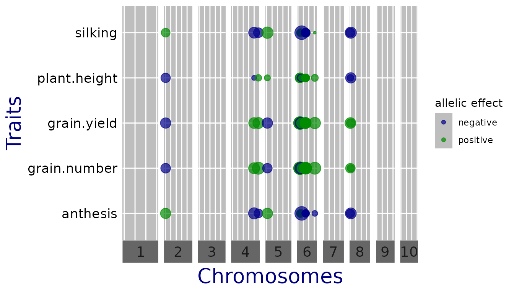
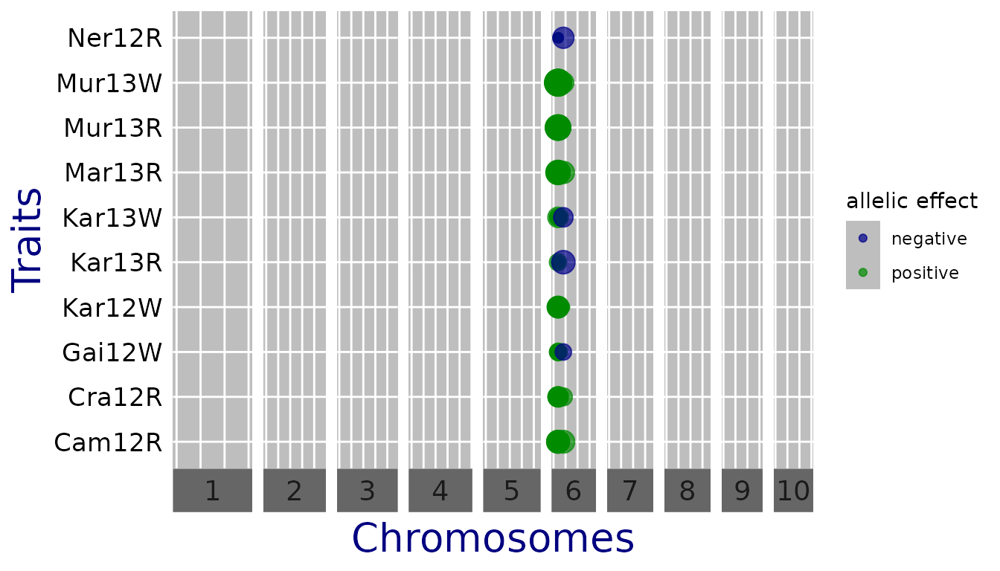

Multi-trait GWAS with the statgenQTLxT package
Bart-Jan van Rossum
2023-02-15
statgenQTLxT.RmdThe statgenQTLxT package performs multi-trait and
multi-environment Genome Wide Association Studies (GWAS), following the
approach of (Zhou and Stephens 2014). It builds on
the statgenGWAS package (for single trait GWAS) which is
available from CRAN. The package
uses data structures and plots defined in the statgenGWAS
package. It is recommended to read the vignette of this package,
accessible in R via vignette(package = "statgenGWAS") or
online at https://biometris.github.io/statgenGWAS/articles/GWAS.html
to get a general idea of those.
Multi-Trait GWAS
Theoretical background
Multi-trait GWAS in the statgenQTLxT package estimates
and tests the effect of a SNP in different trials or on different
traits, one SNP at a time. Genetic and residual covariances are fitted
only once, for a model without SNPs. Given balanced data on \(n\) genotypes and \(p\) traits (or trials) we fit a mixed model
of the form
\(Y = \left(\begin{array}{c} Y_1 \\ \vdots \\ Y_p\end{array}\right) = \left(\begin{array}{c} X\gamma_1 \\ \vdots \\ X\gamma_p\end{array}\right) + \left(\begin{array}{c} x\beta_1 \\ \vdots \\ x\beta_p\end{array}\right) + \left(\begin{array}{c} G_1 \\ \vdots \\ G_p\end{array}\right) + \left(\begin{array}{c} E_1 \\ \vdots \\ E_p\end{array}\right)\)
where \(Y_1\) to \(Y_p\) are \(n × 1\) vectors with the phenotypic values for traits or trials \(1, \ldots, p\). \(x\) is the \(n × 1\) vector of scores for the marker under consideration, and \(X\) the \(n × q\) design matrix for the other covariates. By default only a trait (environment) specific intercept is included. The vector containing the genetic background effects \(G_1, \ldots, G_p\) is Gaussian with zero mean and covariance \(V_g \otimes K\), where \(V_g\) is a \(p × p\) matrix of genetic (co)variances, and \(K\) an \(n × n\) kinship matrix. Similarly, the residual errors (\(E_1, \ldots, E_p\)) have covariance \(V_e \otimes I_n\), for a \(p × p\) matrix \(V_e\) of residual (co)variances.
Hypotheses for the SNP-effects
For each SNP, the null-hypothesis \(\beta_1
= \dots = \beta_p = 0\) is tested, using the likelihood ratio
test (LRT) described in (Zhou and Stephens 2014). If
estCom = TRUE, additional tests for a common effect and for
QTL-by-trait (QTL × T) or QTL-by-environment (QTL × E) are performed,
using the parameterization \(\beta_j = \alpha
+ \alpha_j (1 \leq j \leq p)\). As in (Korte et al.
2012), we use likelihood ratio tests, but not restricted to
the bivariate case. For the common effect, we fit the reduced model
\(\beta_j = \alpha\), and test if \(\alpha = 0\). For the interactions, we test
if \(\alpha_1 = \dots = \alpha_p =
0\).
Models for the genetic and residual covariance
\(V_g\) and \(V_e\) can be provided by the user
(fitVarComp = FALSE); otherwise one of the following models
is used, depending on covModel. If
covModel = "unst", an unstructured model is assumed, as in
(Zhou and Stephens 2014): \(V_g\) and \(V_e\) can be any positive-definite matrix,
requiring a total of \(p(p+1)/2\)
parameters per matrix. If covModel = "fa", a
factor-analytic model is fitted using an EM-algorithm, as in (Millet
et al. 2016). \(V_g\) and
\(V_e\) are assumed to be of the form
\(W W^t + D\), where \(W\) is a \(p ×
m\) matrix of factor loadings and \(D\) a diagonal matrix with trait or
environment specific values. \(m\) is
the order of the model, and the arguments mG and
mE specify the order used for respectively \(V_g\) and \(V_e\). maxIter sets the
maximum number of iterations used in the EM-algorithm. Finally, if
covModel = "pw", \(V_g\)
and \(V_e\) are estimated ‘pairwise’,
as in (Furlotte and Eskin 2015). Looping over
pairs of traits or trials \(1 \leq j < k
\leq p\), \(V_g[j,k] =
V_g[k,j]\) and \(V_e[j,k] =
V_e[k,j]\) are estimated assuming a bivariate mixed model. The
diagonals of \(V_g\) and \(V_e\) are fitted assuming univariate mixed
models. If the resulting \(V_g\) or
\(V_e\) is not positive-definite, they
are replaced by the nearest positive-definite matrix. In case
covModel = "unst" or "pw" it is possible to
assume that \(V_e\) is diagonal
(VeDiag = TRUE).
The class gData
Data for analysis on genomic data comes from different sources and is
stored in one data object of class gData
(genomic Data) for convenience. A
gData object will contain all data needed for performing
analyses, so the first thing to do when using the
statgenQTLxT package is creating a gData
object; see the statgenGWAS package for more details. A
gData object contains the following components:
- Marker map, a data.frame describing the physical positions of the markers on the chromosomes,
- Marker matrix, a numerical matrix containing the genotyping,
- Phenotypic data, either a single data.frame or a list of data.frames containing the phenotypic data,
- Kinship matrix, a matrix describing the genetic relatedness between the different genotypes,
- Further covariates that can be used in the analyses.
In our examples below we will show how a gData object is
created.
Worked example 1: multiple traits in one trial
As examples of the functionality of the package two worked examples
are provided using maize data from the European Union project DROPS. The
data is available from https://doi.org/10.15454/IASSTN (Millet
et al. 2019) and the relevant data sets are included as
data.frames in the statgenGWAS package. We will first show
how to load the data and create a gData object. Users
already familiar with the statgenGwas packages might want
to skip this part and go straight to Running
Multi-trait GWAS section.
dropsMarkers contains the coded marker information for
41,722 SNPs and 246 genotypes. dropsMap contains
information about the positions of those SNPs on the B73 reference
genome V2. dropsPheno contains data for the genotypic means
(Best Linear Unbiased Estimators, BLUEs) for a subset of ten
experiments, with one value per experiment per genotype, for eight
traits. For a more detailed description of the contents of the data see
help(dropsData, package = statgenGWAS).
Create gData object
The first step is to create a gData
object from the raw data that can be used for the GWAS analysis. For
this the raw data has to be converted to a suitable format for a
gData object, see
help(createGData, package = statgenGWAS) and the
statgenGWAS vignette for more details.
When running a multi-trait or multi-environment GWAS, all traits used
in the analysis should be in the same data.frame, with
genotype as first column and the phenotypic data in subsequent columns.
In case of a multi-trait analysis the phenotypic columns contain
different traits, measured in one environment, while for a
multi-environment the columns correspond to the different environments
(same trait). In both cases the data.frame may only contain
phenotypic data. Additional covariates need to be stored in
covar.
Below are some examples of what these data.frames should
look like.
| genotype | Trait1 | Trait2 | Trait3 |
|---|---|---|---|
| G1 | 0.3 | 17 | 277 |
| G2 | 0.4 | 19 | 408 |
| G3 | 0.5 | 17 | 206 |
| G4 | 0.7 | 13 | 359 |
| genotype | Trait1-Trial1 | Trait1-Trial2 | Trait1-Trial3 |
|---|---|---|---|
| G1 | 0.3 | 0.7 | 0.5 |
| G2 | 0.4 | 0.9 | 0.1 |
| G3 | 0.5 | 0.8 | 0.2 |
| G4 | 0.7 | 0.5 | 0.4 |
In our first example, we want to perform multi-trait GWAS for one of
the DROPS environments. dropsPheno contains genotypic means
for six traits in ten trials. To run a multi-trait GWAS analysis for
each of the ten trials, the data has to be added as a list
of ten data.frames. Recall that these
data.frames should have “genotype” as their first column
and may only contain traits after that. Other columns need to be
dropped.
The code below creates this list of
data.frames from dropsPheno.
data(dropsPheno, package = "statgenGWAS")
## Convert phenotypic data to a list.
colnames(dropsPheno)[1] <- "genotype"
dropsPheno <- dropsPheno[c("Experiment", "genotype", "grain.yield", "grain.number",
"anthesis", "silking", "plant.height", "ear.height")]
## Split data by experiment.
dropsPhenoList <- split(x = dropsPheno, f = dropsPheno[["Experiment"]])
## Remove Experiment column.
## phenotypic data should consist only of genotype and traits.
dropsPhenoList <- lapply(X = dropsPhenoList, FUN = `[`, -1)If the phenotypic data consists of only one trial/experiment, it can
be added as a single data.frame without first converting it
to a list. In that case createGData will
convert the input to a list with one item.
Now a gData object containing map, marker information,
and phenotypes can be created. Kinship matrix and covariates may be
added later on.
## Load marker data.
data("dropsMarkers", package = "statgenGWAS")
## Add genotypes as row names of dropsMarkers and drop Ind column.
rownames(dropsMarkers) <- dropsMarkers[["Ind"]]
dropsMarkers <- dropsMarkers[, -1]
## Load genetic map.
data("dropsMap", package = "statgenGWAS")
## Add genotypes as row names of dropsMap.
rownames(dropsMap) <- dropsMap[["SNP.names"]]
## Rename Chromosome and Position columns.
colnames(dropsMap)[2:3] <- c("chr", "pos")
## Create a gData object containing map, marker and phenotypic information.
gDataDrops <- statgenGWAS::createGData(geno = dropsMarkers,
map = dropsMap,
pheno = dropsPhenoList)To get an idea of the contents of the data a summary of the
gData object can be made. This will give an overview of the
content of the map and markers and also print a summary per trait per
trial. Since there are ten trials and six traits in
gDataDrops we restrict the output to one trial, using the
trials argument of the summary function.
## Summarize gDataDrops.
summary(gDataDrops, trials = "Mur13W")
#> map
#> Number of markers: 41722
#> Number of chromosomes: 10
#>
#> markers
#> Number of markers: 41722
#> Number of genotypes: 246
#> Content:
#> 0 1 2 NA
#> 0.28 0.01 0.71 0
#>
#> pheno
#> Number of trials: 1
#>
#> Mur13W:
#> Number of traits: 6
#> Number of genotypes: 246
#>
#> grain.yield grain.number anthesis silking plant.height ear.height
#> Min. 3.3 1348 56 59 222 102
#> 1st Qu. 6.3 2641 61 64 251 125
#> Median 7.5 2965 63 66 258 133
#> Mean 7.4 2986 63 66 259 133
#> 3rd Qu. 8.4 3359 66 68 266 141
#> Max. 11.4 4510 71 74 294 172
#> NA's 0.0 0 0 0 0 0Recoding and cleaning of markers
Marker data has to be numerical and without missing values in order
to do GWAS analysis. This can be achieved using the
codeMarkers() function, which can also perform imputation
of missing markers. The marker data available for the DROPS project has
already been converted from A/T/C/G to 0/1/2. We still use the
codeMarkers() function to further clean the markers, in
this case by removing the duplicate SNPs.
## Set seed.
set.seed(1234)
## Remove duplicate SNPs from gDataDrops.
gDataDropsDedup <- statgenGWAS::codeMarkers(gDataDrops, impute = FALSE,
verbose = TRUE)
#> Input contains 41722 SNPs for 246 genotypes.
#> 0 genotypes removed because proportion of missing values larger than or equal to 1.
#> 0 SNPs removed because proportion of missing values larger than or equal to 1.
#> 5098 duplicate SNPs removed.
#> Output contains 36624 SNPs for 246 genotypes.Note that duplicate SNPs are removed at random. To get reproducible results make sure to set a seed.
To demonstrate the options of the codeMarkers()
function, see help(codeMarkers, package = statgenGWAS) and
the statgenGWAS vignette for more details.
Running Multi-trait GWAS
The cleaned gData object can be used for performing
multi-trait GWAS analysis. In this example the trial Mur13W is
used to demonstrate the options of the runMultiTraitGwas()
function, for a subset of five traits. As in [millet2016] we choose a
factor analytic model for the genetic and residual covariance.
## Run multi-trait GWAS for 5 traits in trial Mur13W.
GWASDrops <- runMultiTraitGwas(gData = gDataDropsDedup,
traits = c("grain.yield","grain.number",
"anthesis", "silking" ,"plant.height"),
trials = "Mur13W",
covModel = "fa")The output of the runMultiTraitGwas() function is an
object of class GWAS. This is a list consisting of five
elements described below.
-
GWAResult: a list of
data.tables, one for each trial for which the analysis was run. Eachdata.tablehas the following columns:
| snp | SNP name |
| trait | trait name |
| chr | chromosome on which the SNP is located |
| pos | position of the SNP on the chromosome |
| pValue | P-value for the SNP |
| LOD | LOD score for the SNP, defined as \(-\log_{10}(pValue)\) |
| effect | effect of the SNP on the trait value |
| effectSe | standard error of the effect of the SNP on the trait value |
| allFreq | allele frequency of the SNP |
head(GWASDrops$GWAResult$Mur13W)
#> snp trait chr pos pValue LOD effect effectSe allFreq
#> 1: SYN83 anthesis 1 3498 0.928 0.033 -0.14 0.19 0.60
#> 2: PZE-101000060 anthesis 1 157104 0.185 0.733 0.50 0.21 0.72
#> 3: PZE-101000088 anthesis 1 238347 0.078 1.110 -0.65 0.25 0.84
#> 4: PZE-101000083 anthesis 1 239225 0.503 0.298 -0.16 0.18 0.58
#> 5: PZE-101000108 anthesis 1 255850 0.654 0.185 0.17 0.34 0.90
#> 6: PZE-101000111 anthesis 1 263938 0.467 0.331 -0.41 0.24 0.83
head(GWASDrops$GWAResult$Mur13W[GWASDrops$GWAResult$Mur13W$trait == "grain.yield", ])
#> snp trait chr pos pValue LOD effect effectSe allFreq
#> 1: SYN83 grain.yield 1 3498 0.928 0.033 -0.060 0.096 0.60
#> 2: PZE-101000060 grain.yield 1 157104 0.185 0.733 0.038 0.102 0.72
#> 3: PZE-101000088 grain.yield 1 238347 0.078 1.110 0.018 0.124 0.84
#> 4: PZE-101000083 grain.yield 1 239225 0.503 0.298 -0.110 0.091 0.58
#> 5: PZE-101000108 grain.yield 1 255850 0.654 0.185 -0.092 0.163 0.90
#> 6: PZE-101000111 grain.yield 1 263938 0.467 0.331 -0.031 0.119 0.83The data.tables above contain the results for traits
anthesis and grain.yield respectively. While the column effect is trait
specific, the p-Value is for the global null-hypothesis (\(\beta_1 = \dots = \beta_p = 0\)) described
above; these P-values are repeated for each trait.
-
signSnp: a list of
data.tables, one for each trial for which the analysis was run, containing the significant SNPs. Optionally also the SNPs close to the significant SNPs are included in thedata.table. See Significance thresholds for more information on how to do this. The data.tables in signSnp consist of the same columns as those in GWAResult described above. Two extra columns are added:
| snpStatus | either “significant SNP” or “within … of a significant SNP” |
| propSnpVar | proportion of the variance explained by the SNP, computed as \(\beta_{\textrm{SNP}}^2 * var(\textrm{SNP}) / var(\textrm{pheno})\) |
In this case there are no significant SNPs:
GWASDrops$signSnp$Mur13W
#> NULLkinship: the kinship matrix (or matrices) used in the GWAS analysis. This can either be the user provided kinship matrix or the kinship matrix computed when running the
runMultiTraitGwas()function.thr: a list of thresholds, one for each trial for which the analysis was run, used for determining significant SNPs.
GWASInfo: additional information on the analysis, e.g. the call and the type of threshold used.
GWAS Summary
For a quick overview of the results, e.g. the number of significant SNPs, use the summary function.
## Create summary of GWASDrops for the trait grain number.
summary(GWASDrops, traits = "grain.number")
#> Mur13W:
#> Traits analysed: anthesis, grain.number, grain.yield, plant.height, silking
#>
#> Data are available for 36624 SNPs.
#> 0 of them were not analyzed because their minor allele frequency is below 0.01
#>
#> GLSMethod: single
#>
#> Trait: grain.number
#>
#> LOD-threshold: 5.9
#> No significant SNPs found.
#>
#> No genomic control correction was applied
#> Genomic control inflation-factor: 1.7GWAS Plots
The plot function can be used to visualize the results
in GWASDrops, with a QQ-plot, Manhattan plot or QTL-plot. More details
for each plotType are available in the
statgenGWAS vignette.
QQ plots
A QQ-plot of the observed against the expected \(-\log_{10}(p)\) values can be made by
setting plotType = "qq". Most of the SNPs are expected to
have no effect, resulting in P-values uniformly distributed on \([0,1]\), and leading to the identity
function (\(y=x\)) on the \(-\log_{10}(p)\) scale. As in the plot
below, deviations from this line should only occur on the right side of
the plot, for a small number of SNPs with an effect on the phenotype
(and possibly SNPs in LD). There is inflation if the
observed \(-\log_{10}(p)\) values are
always above the line \(y=x\), and
(less common) deflation if they are always below this
line. A QQ-plot therefore gives a first impression of the quality of the
GWAS model: if for example \(-\log_{10}(p)\) values are consistently too
large (inflation), the correction for genetic relatedness may not be
adequate. In this case it may be of interest to correct the P-values for
inflation, using the genomicControl argument in the
runMultiTraitGwas().
## Plot a qq plot of GWAS Drops.
plot(GWASDrops, plotType = "qq")Manhattan plots
A Manhattan plot is made by setting
plotType = "manhattan". Significant SNPs are marked in
red.
## Plot a manhattan plot of GWAS Drops.
plot(GWASDrops, plotType = "manhattan")More options linked with plotType = "manhattan" are
described in the statgenGWAS vignette.
QTL plots
A qtl plot can be made by setting plotType = "qtl". In
this plot the significant SNPs are marked by circles at their genomic
positions, with diameter proportional to the estimated effect size; for
an example see Millet et al. (2016). Typically,
this is done for multiple traits or environments, with the genomic
position on the x-axis, which are displayed horizontally above each
other and can thus be compared.
Since the traits are measured on a different scale, the effect
estimates cannot be compared directly. For better comparison, one can
set normalize = TRUE, which divides the estimates by the
standard deviation of the phenotype.
## Plot a qtl plot of GWAS Drops for Mur13W.
## Set significance threshold to 5 and normalize effect estimates.
plot(GWASDrops, plotType = "qtl", yThr = 5, normalize = TRUE)
Other arguments can be used to plot a subset of the chromosomes
(chr) and directly export the plot to .pptx
(exportPptx = TRUE and specify pptxName). Note
that the officer
package is required for this. A full list of arguments can be found by
running help(plot.GWAS).
Kinship matrices
The runMultiTraitGwas() function has an argument
kinshipMethod, which defines the kinship matrix used for
association mapping. Kinship matrices can be computed directly using the
kinship function or within the
runMultiTraitGwas function. There are five options: (1)
using the covariance between the scaled SNP-scores
(kinshipMethod = "astle", the default; see e.g. equation
(2.2) in Astle and Balding (2009)) (2)
Identity by State (kinshipMethod = "IBS"; see e.g. equation
(2.3) in Astle and Balding (2009)) (3) using
the formula by VanRaden (2008)
(kinshipMethod = "vanRaden") (4) using an identity matrix
(kinshipMethod = "identity"), corresponding to no kinship
correction (5) User-defined, in which case the argument kin
needs to be specified.
By default, the same kinship matrix is used for testing all SNPs
(GLSMethod = "single"). When
GLSMethod = "multi", the kinship matrix is
chromosome-specific. In this case, the function fits variance components
and computes effect-estimates and P-values for each chromosome in turn,
using the kinship matrix for that chromosome (i.e. using all SNPs that
are not on this chromosome). Each chromosome-specific
kinship matrix is computed using the method specified by the argument
kinshipMethod. As shown by Rincent
et al. (2014), this can give a considerable
improvement in power.
## Run multi-trait GWAS for trial 'Mur13W'.
## Use chromosome specific kinship matrices computed using method of van Raden.
GWASDropsChrSpec <- runMultiTraitGwas(gData = gDataDropsDedup,
trials = "Mur13W",
GLSMethod = "multi",
kinshipMethod = "vanRaden",
covModel = "fa")Worked example 2: one trait measured in multiple trials
Create gData object
In this example, we will focus on one trait, grain yield, in all
trials. dropsPheno contains genotypic means for 10 trials.
To be able to run a GWAS analysis with one trait measured in all trials,
the data has to be reshaped and added as a single data.frame with
“genotype” as first column and traits after that.
## Reshape phenotypic data to data.frame in wide format containing only grain.yield.
phenoDat <- reshape(dropsPheno[,c("Experiment","genotype","grain.yield")],
timevar = "Experiment",
idvar = "genotype",
direction = "wide",
v.names = "grain.yield")
## Rename columns to trial name only.
colnames(phenoDat)[2:ncol(phenoDat)] <-
gsub(pattern = "grain.yield.", replacement = "",
x = colnames(phenoDat)[2:ncol(phenoDat)])Now we create a gData object containing map marker
information and phenotypes.
## Create a gData object containing map, marker and phenotypic information.
gDataDropsxE <- statgenGWAS::createGData(geno = dropsMarkers,
map = dropsMap,
pheno = phenoDat)
summary(gDataDropsxE)
#> map
#> Number of markers: 41722
#> Number of chromosomes: 10
#>
#> markers
#> Number of markers: 41722
#> Number of genotypes: 246
#> Content:
#> 0 1 2 NA
#> 0.28 0.01 0.71 0
#>
#> pheno
#> Number of trials: 1
#>
#> phenoDat:
#> Number of traits: 10
#> Number of genotypes: 246
#>
#> Kar12W Gai12W Kar13W Ner12R Mar13R Mur13R Cra12R Cam12R Kar13R Mur13W
#> Min. 5.4 7.5 4.1 2.1 3.8 2.1 0.088 0.38 5.6 3.3
#> 1st Qu. 8.8 10.4 7.0 4.0 7.0 5.8 0.891 1.33 8.7 6.3
#> Median 9.9 11.2 7.9 4.7 7.7 6.9 1.381 1.87 9.8 7.5
#> Mean 9.7 11.2 8.0 4.7 7.8 6.9 1.492 1.98 9.9 7.4
#> 3rd Qu. 10.7 12.0 9.1 5.3 8.6 7.8 1.971 2.59 11.0 8.4
#> Max. 13.1 14.3 12.7 7.1 11.5 10.6 4.979 4.90 13.8 11.4
#> NA's 0.0 0.0 0.0 0.0 0.0 0.0 0.000 0.00 0.0 0.0Recoding and cleaning of markers
## Remove duplicate SNPs from gDataDrops.
gDataDropsDedupxE <- statgenGWAS::codeMarkers(gDataDropsxE, impute = FALSE,
verbose = TRUE)
#> Input contains 41722 SNPs for 246 genotypes.
#> 0 genotypes removed because proportion of missing values larger than or equal to 1.
#> 0 SNPs removed because proportion of missing values larger than or equal to 1.
#> 5098 duplicate SNPs removed.
#> Output contains 36624 SNPs for 246 genotypes.Multi-trial GWAS
Similar to the first example we run a multi-trial GWAs using a factor analytic model.
## Run multi-trial GWAS for one trait in all trials.
GWASDropsxE <- runMultiTraitGwas(gData = gDataDropsDedupxE,
covModel = "fa")Among the significant SNPs we find the large QTL on chromosome 6 reported in Millet et al. (2016).
head(GWASDropsxE$signSnp$pheno, row.names = FALSE)
#> snp trait chr pos pValue LOD effect effectSe allFreq snpStatus propSnpVar
#> 1: SYN25281 Kar12W 6 18646369 1.6e-07 6.8 0.23 0.100 0.79 significant SNP 0.017
#> 2: PZE-106021363 Kar12W 6 18846283 7.4e-11 10.1 0.28 0.091 0.70 significant SNP 0.034
#> 3: PZE-106021410 Kar12W 6 18990291 2.5e-11 10.6 0.30 0.091 0.70 significant SNP 0.037
#> 4: PZE-106021419 Kar12W 6 18991091 1.5e-12 11.8 0.26 0.092 0.74 significant SNP 0.026
#> 5: PZE-106021420 Kar12W 6 18991117 2.2e-10 9.6 0.27 0.091 0.70 significant SNP 0.032
#> 6: PZE-106021424 Kar12W 6 18991481 4.2e-12 11.4 0.24 0.092 0.74 significant SNP 0.022GWAS Summary
For a quick overview of the results, e.g. the number of significant
SNPs, we again use the summary function. We restrict the output to two
trials using the traits argument.
summary(GWASDropsxE, traits = c("Mur13W", "Kar12W"))
#> phenoDat:
#> Traits analysed: Cam12R, Cra12R, Gai12W, Kar12W, Kar13R, Kar13W, Mar13R, Mur13R, Mur13W, Ner12R
#>
#> Data are available for 36624 SNPs.
#> 0 of them were not analyzed because their minor allele frequency is below 0.01
#>
#> GLSMethod: single
#>
#> Trait: Mur13W
#>
#> LOD-threshold: 5.9
#> Number of significant SNPs: 8
#> Smallest p-value among the significant SNPs: 1.5e-12
#> Largest p-value among the significant SNPs: 3.9e-07 (LOD-score: 6.4)
#>
#> No genomic control correction was applied
#> Genomic control inflation-factor: 0.94
#>
#> Trait: Kar12W
#>
#> LOD-threshold: 5.9
#> Number of significant SNPs: 8
#> Smallest p-value among the significant SNPs: 1.5e-12
#> Largest p-value among the significant SNPs: 3.9e-07 (LOD-score: 6.4)
#>
#> No genomic control correction was applied
#> Genomic control inflation-factor: 0.94GWAS Plots
As in the first example we use the plot.GWAS() function
to visualize the results in GWASDropsxE, with a QQ-plot,
Manhattan plot or QTL-plot.
QQ plots
plot(GWASDropsxE, plotType = "qq")Manhattan plots
plot(GWASDropsxE, plotType = "manhattan")QTL plots
The trait is measured with the same scale across trials so the effect
estimates can be compared directly (one can set
normalize = FALSE).
## Set significance threshold to 6 and do not normalize effect estimates.
plot(GWASDropsxE, plotType = "qtl", yThr = 6, normalize = FALSE)
Further options
The runMultiTraitGwas() function has many more arguments
that can be specified. In this section similar arguments are grouped and
explained with examples on how to use them.
Significance thresholds
The threshold for selecting significant SNPs in a GWAS analysis is
computed by default using Bonferroni correction, with an alpha of 0.05.
The alpha can be modified setting the option alpha when calling
runMultiTraitGwas(). Two other threshold types can be used:
a fixed threshold (thrType = "fixed") specifying the \(-\log_{10}(p)\) (LODThr) value
of the threshold, or a threshold that defines the n SNPs with the
highest \(-\log_{10}(p)\) scores as
significant SNPs. Set thrType = "small" together with
nSnpLOD = n to do this. In the following example, we define
all SNPs with \(p < 10^{-4}\) as
significant SNPs.
## Run multi-trait GWAS for Mur13W.
## Use a fixed significance threshold of 4.
GWASDropsFixThr <- runMultiTraitGwas(gData = gDataDropsDedup,
trials = "Mur13W",
covModel = "fa",
thrType = "fixed",
LODThr = 4)Controlling false discovery rate
A final option for selecting significant SNPs is by setting
thrType = "fdr". When doing so the significant SNPs won’t
be selected by computing a genome wide threshold, but by trying to
control the rate of false discoveries as in Brzyski et al. (2016).
First, a list is defined containing all SNPs with a P-value below
pThr, default 0.05. Then clusters of SNPs are created using
a two step iterative process in which SNPs with the lowest P-values are
selected as cluster representatives. This SNP and all SNPs that have a
correlation with this SNP of \(\rho\)
or higher (specified by the function argument rho, default
0.4) will form a cluster. The selected SNPs are removed from the list
and the procedure is repeated until no SNPs are left. At the end of this
step, one has a list of clusters, with corresponding vector of P-values
of the cluster representatives. Finally, to determine the number of
significant clusters, the first cluster is determined for which the
P-value of the cluster representative is larger than \(cluster_{number} * \alpha / m\), where
\(m\) is the number of SNPs and \(\alpha\) can be specified by the
corresponding function argument. All previous clusters are selected as
significant.
Variance components
There are three ways to compute the variance components used in the
GWAS analysis. These can be specified by setting the argument
covModel. See Models for the genetic
and residual covariance for a description of the
options.
Note that covModel = unst can only be used for
less than 10 traits or trials. It is not recommended to use it for six
to nine trials for computational reasons.
## Run multi-trait GWAS for for Mur13W.
## Use a factor analytic model for computing the variance components.
GWASDropsFA <- runMultiTraitGwas(gData = gDataDropsDedup,
trials = "Mur13W",
covModel = "fa")
## Rerun the analysis, using the variance components computed in the
## previous model as inputs.
GWASDropsFA2 <- runMultiTraitGwas(gData = gDataDropsDedup,
trials = "Mur13W",
fitVarComp = FALSE,
Vg = GWASDropsFA$GWASInfo$varComp$Vg,
Ve = GWASDropsFA$GWASInfo$varComp$Ve)Parallel computing
To improve performance when using a pairwise variance component
model, it is possible to use parallel computing. To do this, a parallel
back-end has to be specified by the user, e.g. by using
registerDoParallel from the doParallel package
(see the example below). In addition, in the
runMultiTraitGwas() function the argument
parallel has to be set to TRUE. With these
settings the computations are done in parallel per pair of traits.
## Register parallel back-end with 2 cores.
doParallel::registerDoParallel(cores = 2)
## Run multi-trait GWAS for one trait in all trials.
GWASDropsxEPar <- runMultiTraitGwas(gData = gDataDropsDedupxE,
covModel = "pw",
parallel = TRUE)Covariates
Covariates can be included as extra fixed effects in the GWAS model.
The runMultiTraitGwas() function distinguishes between
‘usual’ covariates and SNP-covariates. The former could be design
factors such as block, or other traits one wants to condition on. In the
latter case, the covariate(s) are one or more of the markers contained
in the genotypic data. SNP-covariates can be set with the argument
snpCov, which should be a vector of marker names.
Similarly, other covariates should be specified using the argument
covar, containing a vector of covariate names. The
gData object should contain these covariates in
gData$covar.
In case SNP-covariates are used, GWAS for all the other SNPs is performed with the the SNP-covariates as extra fixed effect; also the null model used to estimate the variance components includes these effects. For each SNP in SNP-covariates, a P-value is obtained using the same F-test and null model to estimate the variance components, but with only all other SNPs (if any) in SNP-covariates as fixed effects.
## Run multi-trait GWAS for Mur13W.
## Use PZE-106021410, the most significant SNP, as SNP covariate.
GWASDropsSnpCov <- runMultiTraitGwas(gData = gDataDropsDedup,
trials = "Mur13W",
snpCov = "PZE-106021410",
covModel = "fa")Minor Allele Frequency
It is recommended to remove SNPs with a low minor allele frequency
(MAF) from the data before starting a GWAS analysis. However it is also
possible to do so in the analysis itself. The difference between these
approaches is that codeMarkers() removes the SNPs, whereas
runMultiTraitGwas() excludes them from the analysis but
leaves them in the output (with results set to NA). In the
latter case it will still be possible to see the allele frequency of the
SNP.
By default all SNPs with a MAF lower than 0.01 are excluded from the
analysis. This can be controlled by the argument MAF.
Setting MAF to 0 will still exclude duplicate SNPs since duplicates
cause problems when fitting the underlying models.
## Run multi-trait GWAS for Mur13W.
## Only include SNPs that have a MAF of 0.05 or higher.
GWASDropsMAF <- runMultiTraitGwas(gData = gDataDropsDedup,
trials = "Mur13W",
covModel = "fa",
MAF = 0.05)Estimation of common SNP effects and QTL×E effects.
Besides a normal SNP-effect model, it is possible to fit a common
SNP-effect model as well (see Hypotheses for
the SNP-effects). When doing so, in addition to the
SNP-effect, also the common SNP-effect and the QTL×E effect and
corresponding standard errors and P-values are returned. These are
included as extra columns in the GWAResult data.table in
the output of the function.
## Run multi-trait GWAS for Mur13W.
## Fit an additional common sNP effect model.
GWASDropsCommon <- runMultiTraitGwas(gData = gDataDropsDedup,
trials = "Mur13W",
covModel = "fa",
estCom = TRUE)
head(GWASDropsCommon$GWAResult$Mur13W)
#> snp trait chr pos pValue LOD effect effectSe allFreq pValCom effsCom effsComSe pValQtlE
#> 1: SYN83 anthesis 1 3498 0.98 0.0087 -0.12 0.19 0.60 0.536 -0.028 0.045 0.98
#> 2: PZE-101000060 anthesis 1 157104 0.20 0.6991 0.47 0.20 0.72 0.029 0.103 0.048 0.58
#> 3: PZE-101000088 anthesis 1 238347 0.19 0.7142 -0.61 0.25 0.84 0.049 -0.115 0.059 0.44
#> 4: PZE-101000083 anthesis 1 239225 0.76 0.1207 -0.16 0.18 0.58 0.203 -0.054 0.043 0.88
#> 5: PZE-101000108 anthesis 1 255850 0.60 0.2253 0.15 0.34 0.90 0.774 -0.023 0.079 0.48
#> 6: PZE-101000111 anthesis 1 263938 0.60 0.2217 -0.37 0.24 0.83 0.248 -0.064 0.055 0.66The SNPs with a significant QTLxE effect come from the same regions as the SNPs in supplementary table 6 in Millet et al. (2016), who however used a different SNP set. Another difference is that here we explicitly test for QTLxE within the GWAS, whereas Millet et al. (2016) regressed SNP effects on environmental covariates.